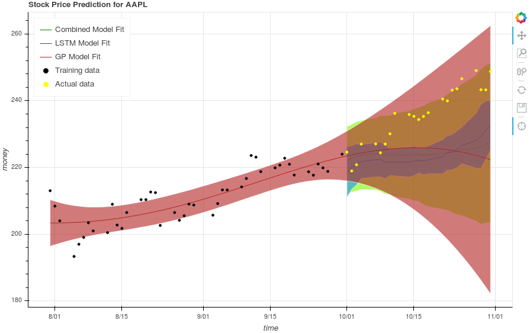

The approach to combining models¶
Initially, we looked into various methods, such as committee models, mixture of experts, and gaussian mixture models. However, they all either requried specific model setups - such as training the base models and the combining model together, or a lot of overhead in understanding the math in the implementation - such as the gaussian mixture model approach.
The approach we finally took was to first treat the LSTM output as a distribution, and then combine the LSTM and GP output distributions in a weighted manner. We justify this by pointing out that the LSTM output has a random nature to it, and that randomness can be modeled (like all random models) by a white noise gaussian. Since the rest of the LSTM is deterministic, that randomness will propagate to the result, resulting in a mean and standard distribution. Since the output of the LSTM is essentially a sample from this distribution, we would need many runs of the LSTM to truly generate information about the LSTM. In the interest of computational limitations and time, we only do a few, and approximate out a mean and standard deviation. Following that, we add the two means and standard deviations of the model outputs using a weighting factor alpha. By default, alpha is set to 0.5 - an even split between the models. With the combined mean and standard deviation, we can generate most likely predictions and confidence intervals for the combined output. An image of this result is shown below.
